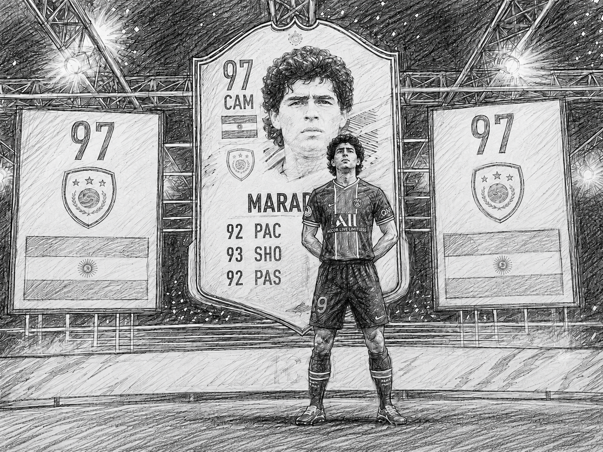

Project Essay
FIFA

In my teens I would spend way too much time playing FIFA (specifically FIFA 16 to FIFA 22). Ultimate Team (luckily packed Prime Diego Maradona twice), skill games (free kicks were my favorite), career mode (would put the difficulty to 'ultimate' with a 3rd division team in a random league and try to get into the Champions League with no transfer budget increase), and playing against my brother was super addictive to my brain when we were kids to an almost unhealthy degree (especially during COVID).
Later I realized that game taught me how the real world works with the most amount of freedom, aka no friction. The game teaches you luck, skill, competition all at the same time.
When thinking about it, I learned a large portion of my entrepreneurship acumen from playing FIFA in general. I started casual at 9 doing classic kick off. By 13 I was deep into Ultimate Team and career mode. By 15 I was hardcore on Ultimate Team, grinding FUT Champions, online division rivals, and trading players on the transfer market while occasionally having British FIFA YouTubers playing in the background.
Looking back now, every hour I spent on FIFA was building towards skills I use everyday. Things like risk management, opportunity cost, and probability. And Electronic Arts (the makers of FIFA) deserve a lot more credit than they get. They set out to build a fun game and accidentally created something far more important for me.